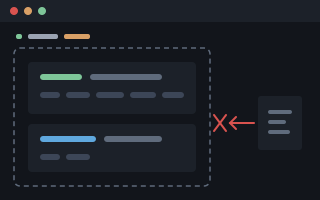

Shoddy · Fettler
File, search and edit tools for an AI assistant and for scripts. One program, two front ends, and no shell between it and the file.
An assistant given Fettler cannot wander. Everything outside the boundary is refused. Every path it touches must sit inside a tree, a folder you named ahead of time. Outside those trees, everything is refused: writing, reading, listing, even learning that a file exists. There is no current directory to change. No path can climb out of a tree. There is no shell to go round it. So the assistant cannot open a sibling project, an old copy or your home directory, read the wrong thing, and answer from it.

fettlebounded file tools · no shellInside the boundary, Fettler does the work an assistant does on source files. It can find a file, search its contents, read it, write it, edit it, move it, copy it and delete it. It can also run a named build task. It is written in C#, ships from this repository, and installs as one file. Nothing it does changes how you work. Your shell, your file explorer, your editor and your source control stay as they were.
fettle. The command is the verb form, because fettle move a.txt b.txt reads as an instruction and fettler move does not. Both spellings are correct.Note This page asks you to type nothing. To have Fettler working in about five minutes, go to the quick start.
| Bounded, not advisory | Every path resolves inside a tree you declared. A path outside is refused in the same words whether or not the file exists, so a refusal cannot be used to probe a disk. There is no current directory, no path that climbs out, and no shell. |
| Every answer is the next call's argument | search returns tree:path:line:column. read numbers its lines and returns a hash. edit takes exactly those. A refused edit changes nothing. |
| It reads more than source | Notebooks as cells, spreadsheets as rows with their formulas, Word documents as paragraphs under their headings, PDFs as text per page, images as facts. It reads inside archives without unpacking them. |
| Batches are all or nothing | Every edit in a batch is resolved before the first byte moves. A missing permission, a file changed underneath, or an anchor that no longer matches stops the whole batch, and the tree stays as it was. |
| Two front ends, one core | A command-line tool for scripts and an MCP server for an assistant, over the same operations. In machine-readable mode the complete result goes to stdout, failures included. |
| Nothing changes how you work | Your shell, file explorer, editor and source control stay as they were. |
Renaming a C# type in this repository touches 200 occurrences across 23 files. That number was measured with fettle search. Nobody does this change by hand, and every assistant is asked to do it.
| Built-in file tools | Fettler | |
|---|---|---|
| Calls | one search, then a read and an edit for each file: 47 | search, replace --dry-run, replace: 3 |
| Context spent | 23 whole files | the matching lines |
| If it fails at file 15 | 14 files renamed and 9 not. The tree no longer compiles, and nothing says which half changed. | Nothing is written unless all 23 resolve first. If a write then fails, the answer names the file it stopped at and how many were already done. |
| Per-file properties | whatever the writer happened to emit | each file keeps its own encoding, line endings and execute bit |
The screen is optional, off by default, and costs one line to try. A tree can declare that certain things must not leave it. One detection refuses the whole response. An image in a screened tree is refused rather than served unchecked, because the screen cannot read into it. The shared screen is introduced on the overview. The screening page switches it on and proves it refuses.